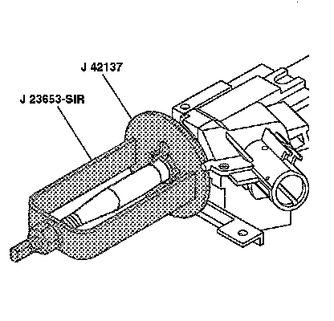
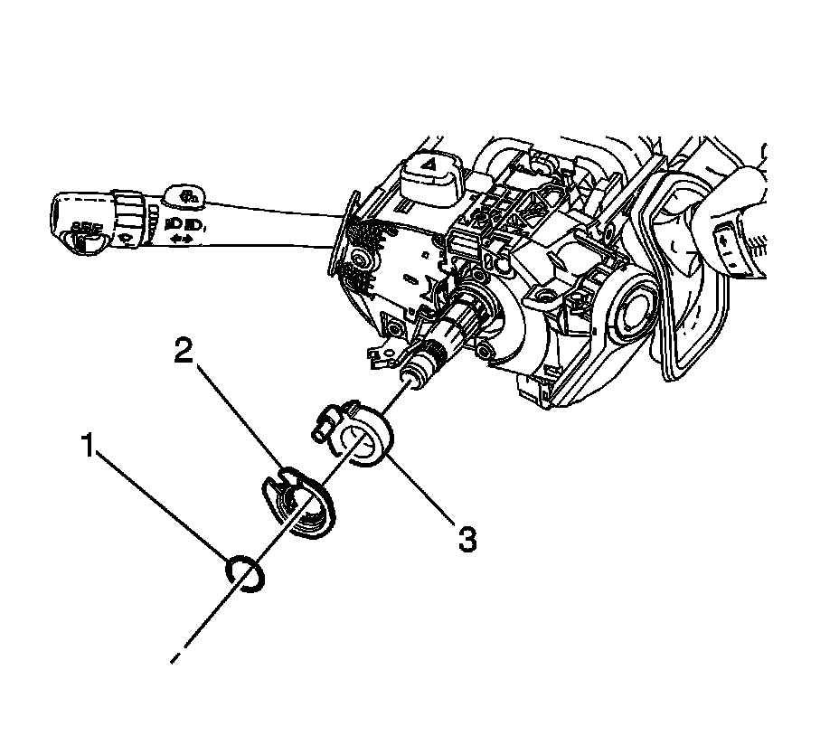

Turn Signal Switch Cancel Cam Position Plate Replacement
Turn Signal Switch Cancel Cam Position Plate Replacement
Tools Required
^ J 23653-SIR Steering Column Lock Plate Compressor
^ J 42137 Cam Orientation Plate Adapter
Removal Procedure

Caution: Refer to SIR Caution.
1. Disable the supplemental inflatable restraint (SIR) system. Refer to SIR Disabling and Enabling.
Important: Let the SIR coil hang freely after removal.
2. Remove the SIR coil.
3. Remove and discard the bearing retainer using J 23653-SIR and J 42137.

4. Remove the following parts from the steering column shaft assembly:
1. Turn signal switch cancel cam plate (2)
2. Turn signal switch cancel cam (3)
Installation Procedure
1. Install the following parts onto the steering column shaft assembly:
1. Lubricate the turn signal cancel cam (3) with GM P/N 12377900 (Canadian P/N 10953529).
2. Turn signal switch cancel cam plate (2)
2. Install the new bearing retainer onto the steering shaft assembly.
3. Compress the cam orientation plate using J 23653-SIR and J 42137.
4. Firmly seat the bearing retainer into the groove on the steering shaft assembly.
5. Remove J 23653-SIR.
6. Install the SIR coil.
7. Enable the SIR system. Refer to SIR Disabling and Enabling.